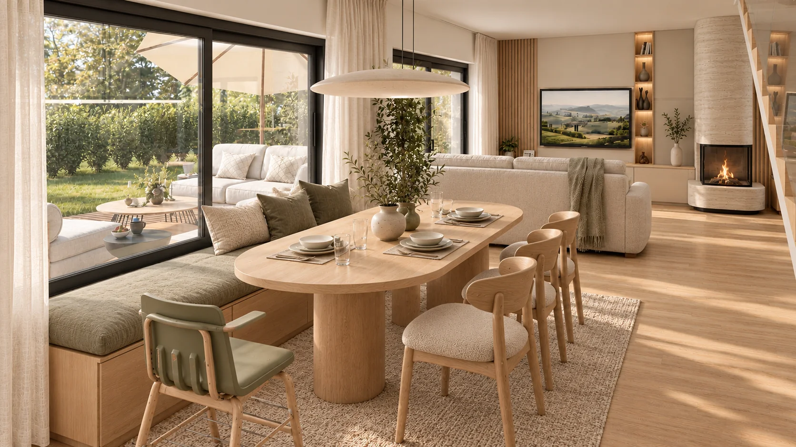
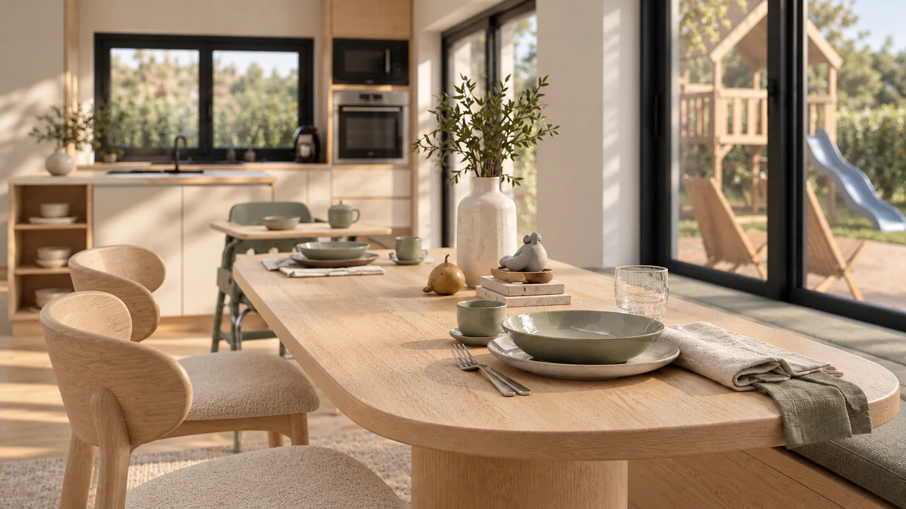
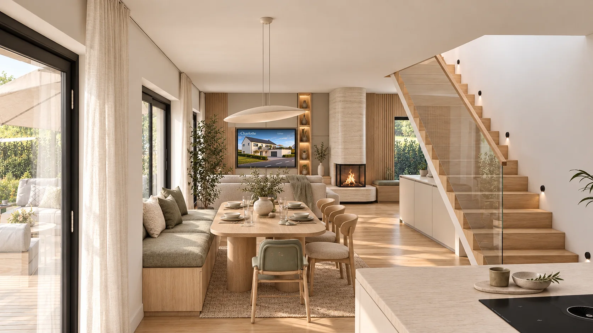
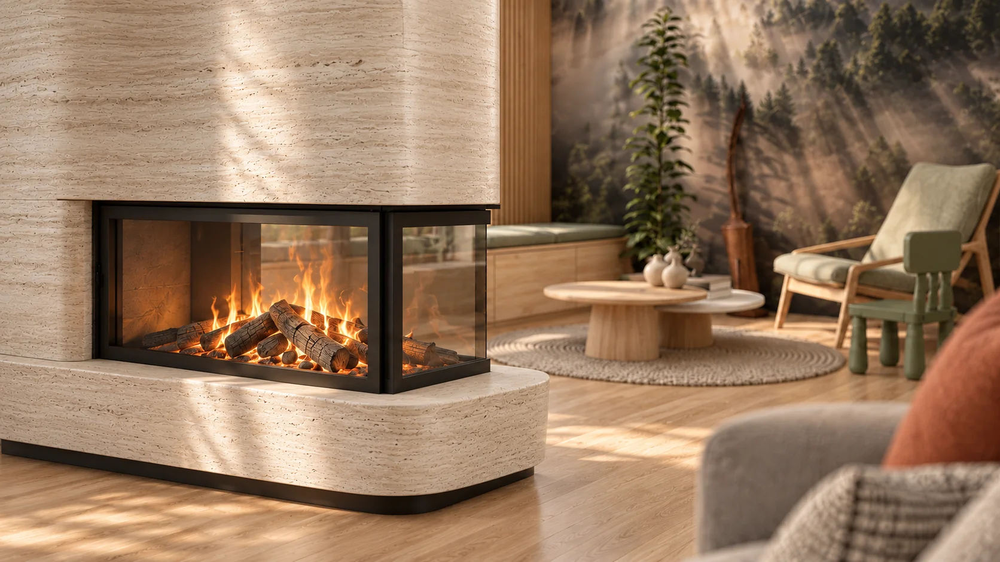
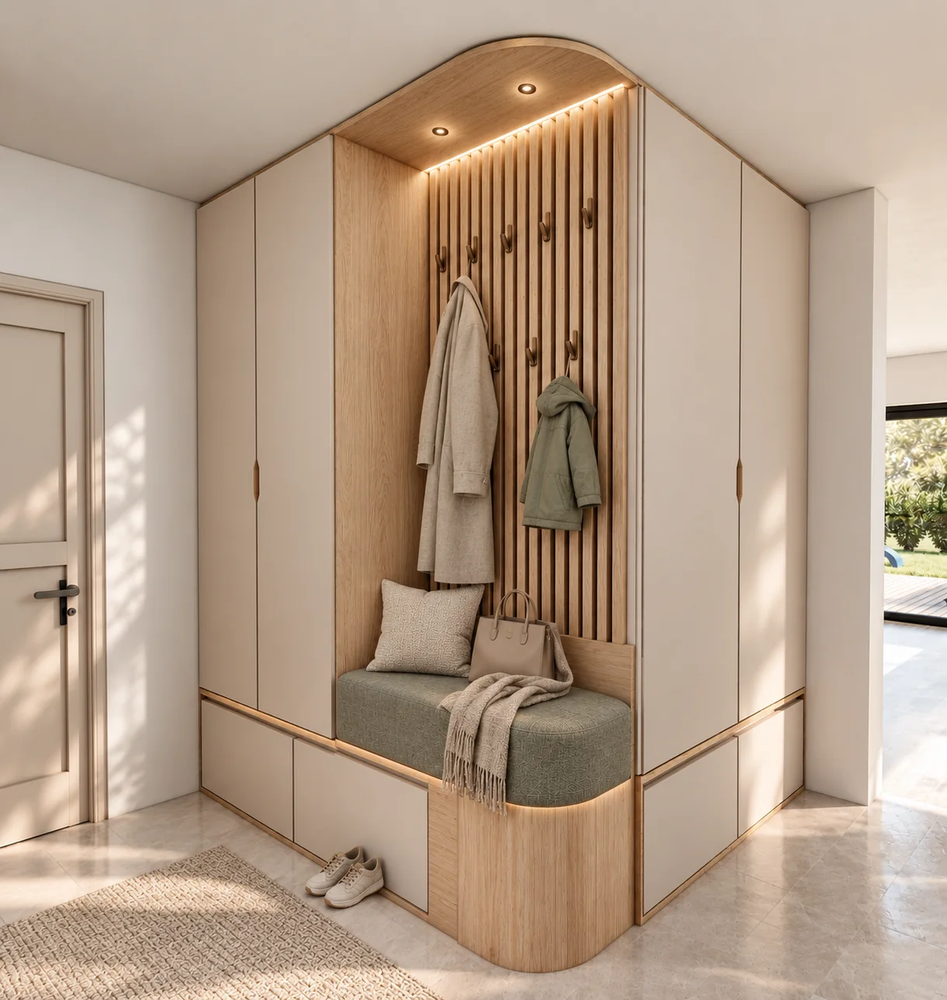
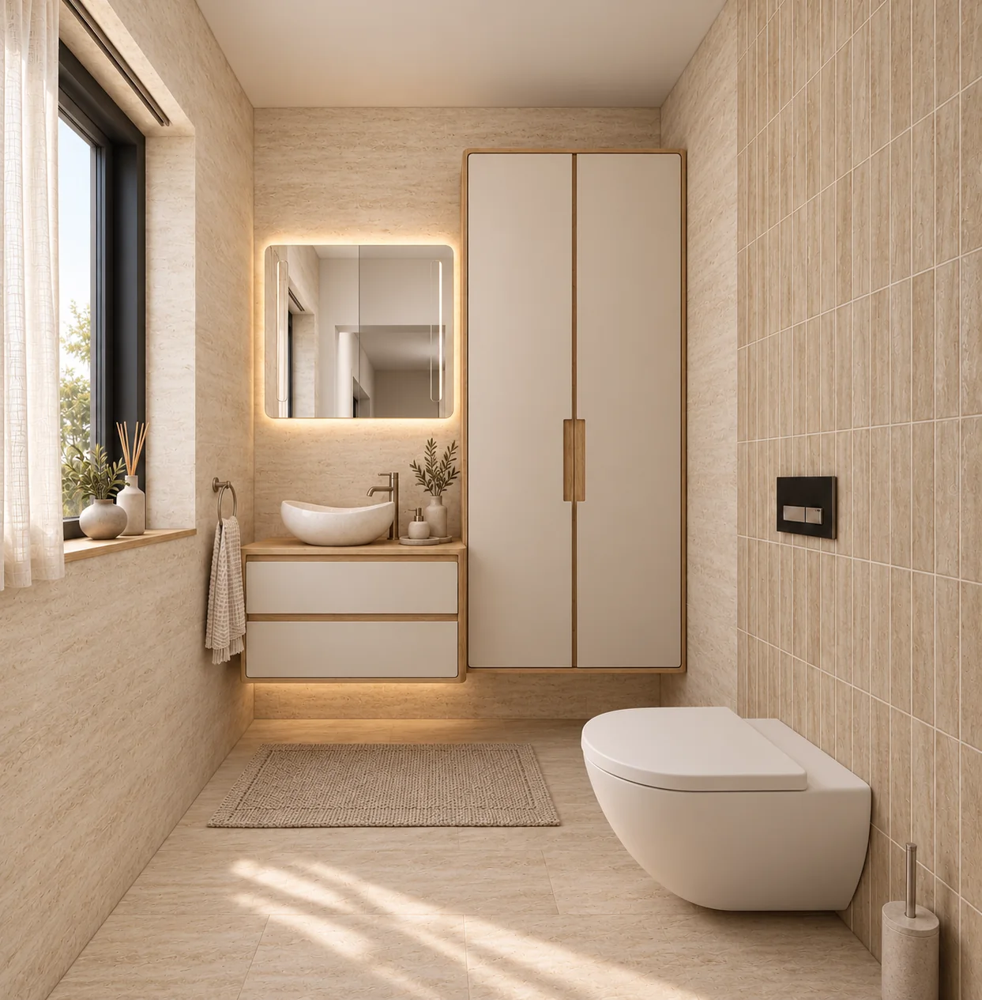
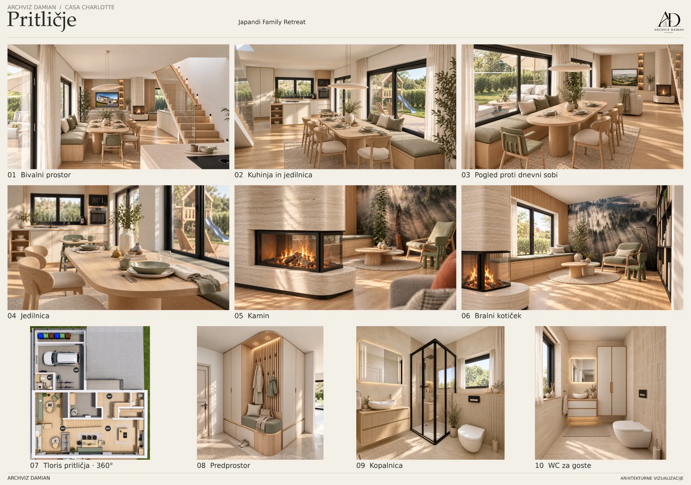
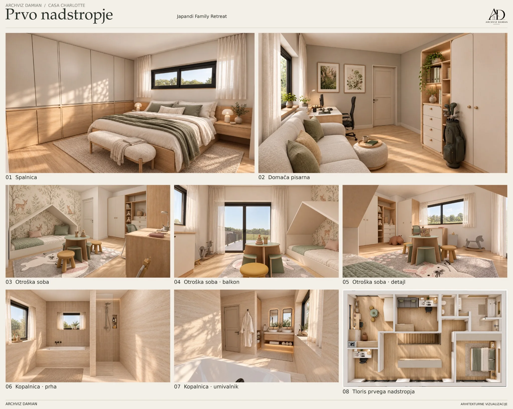
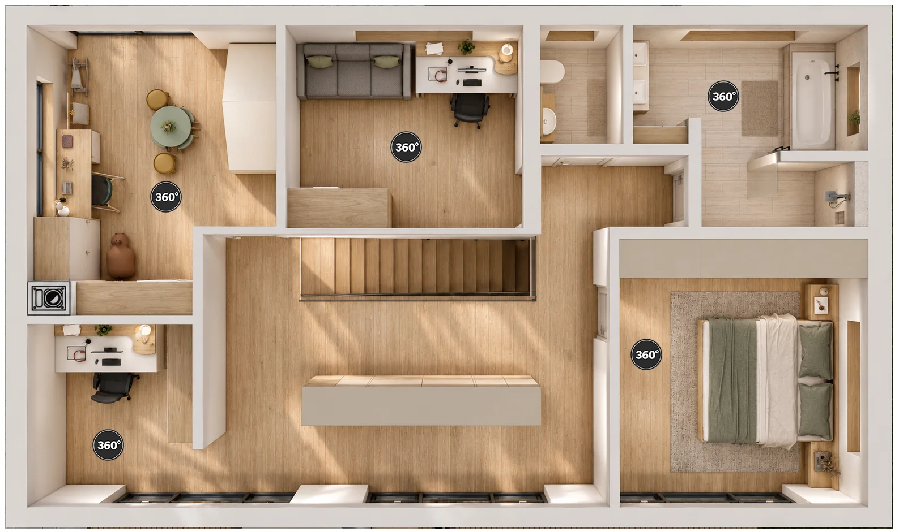
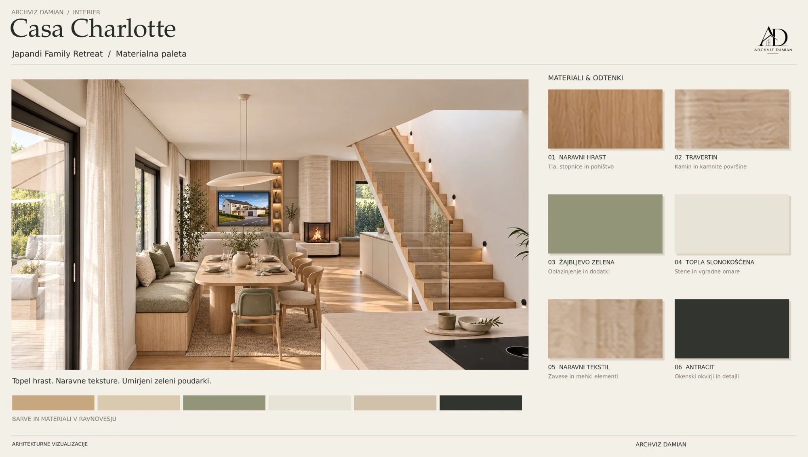

Casa Charlotte · Interiors & floor plans
Japandi interior visualization paired with the furnished floor plan to communicate both atmosphere and layout.
Living spaces








Interior details




Floor plans & material palette








Camera markers shown on the original floor plan are reference points within the image.